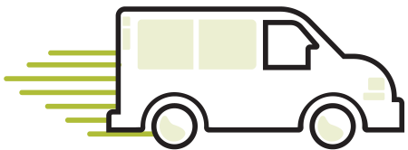

<section class="growler-sec pad-t-2 pad-b-2">
  <div class="grid grid-middle wrapper island-2">

    <div class="unit [ xs-1 s-1 m-1 l-1-2 xl-1-4 ] text-center">
      <i class="icon i-van">
        
      </i>
    </div>

    <div class="unit [ xs-1 s-1 m-1 l-1-2 xl-3-4 ] gutter-1-4 pad-t white-text">
     <h2 class="push-0">ENVIRONMENT IMPACT</h2>
     <p class="push-0 milli max-length-no-center">Each year BottleWorks collects and then returns over 1,000,000 recyclable bottles to the Beer Store Depot. Instead of being sent to the landfill, the glass bottles are cleaned and reused at either a bottle  plant or reused by a third party to create new bottles. Aluminum products are recycled and recreated into new cans or metal sheets.</p>
    </div>

  </div>
</section>
